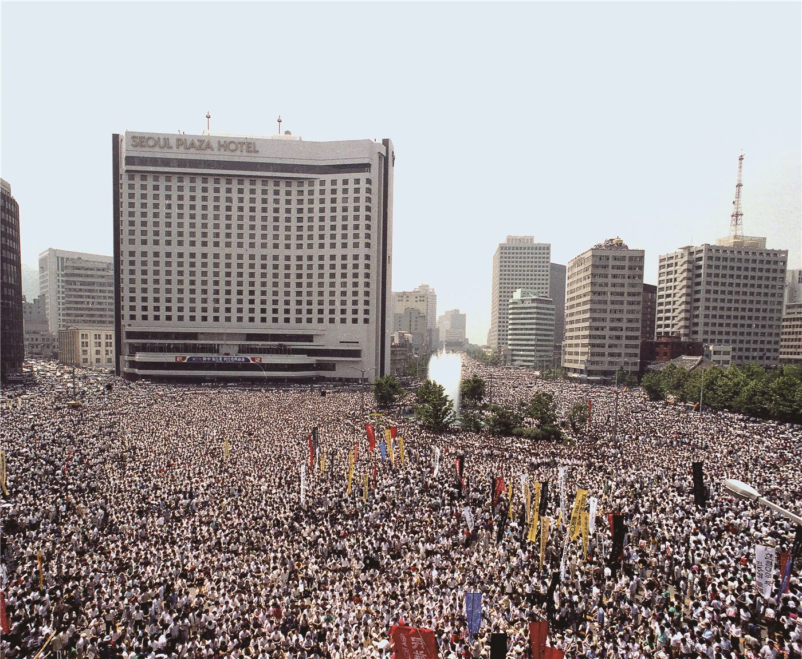

李대통령 "국민이 진정한 주인"… 6·10 항쟁 39주년 메시지
이재명 대통령이 6·10 민주항쟁 39주년을 맞아 국민 주권의 의미를 되새겼다. 같은 날이 6·10 만세운동 100주년이기도 하다는 점을 들어 두 사건의 공통점을 짚었다.
마약란 기자 · 2026.06.15
橋한국·정치

이재명 대통령이 6·10 민주항쟁 39주년 기념일을 맞아 "국민주권정부는 대한민국의 진정한 주인인 국민의 뜻을 충실히 받들며 민주주의를 더욱 발전시켜가겠다"고 밝혔다고 경향신문이 전했다.
광고 문의 · 300×250대통령은 이날이 6·10 민주항쟁 39주년이자 6·10 만세운동이 일어난 지 100년이 되는 날이라는 점에 주목했다. 61년의 시간 차를 두고 일어난 두 사건이 서로 다른 역사처럼 보이지만, '국민 주권'이 분명하게 발현된 날이라는 공통점을 지닌다고 평가했다.
그는 "국민의 삶을 개선하고 국민의 안전을 지키며, 평화롭고 번영하는 미래로 나아갈 것을 약속드린다"고 덧붙였다. 1987년 민주화 운동의 정신을 현 정부의 국정 기조와 연결하려는 메시지로 읽힌다.
6·10 항쟁은 한국 민주주의 발전의 분수령으로 꼽히는 역사적 사건이다. 이 기념 메시지는 검찰개혁·사법개혁 등 현 정부가 추진하는 제도 변화의 정당성을 '국민 주권'이라는 키워드로 떠받치려는 의도와도 맞닿아 있다는 분석이 나온다.
출처·참고 (사실 확인용 — 본문은 직접 재작성)
· 경향신문 (khan.co.kr)
· 조선일보 (chosun.com)
· 경향신문 (khan.co.kr)
· 조선일보 (chosun.com)